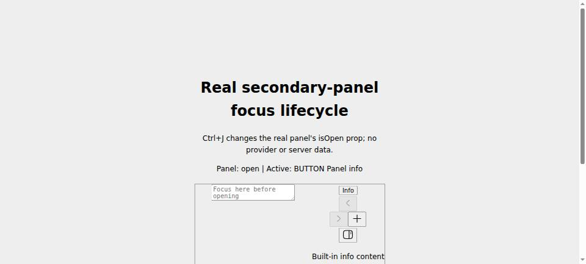
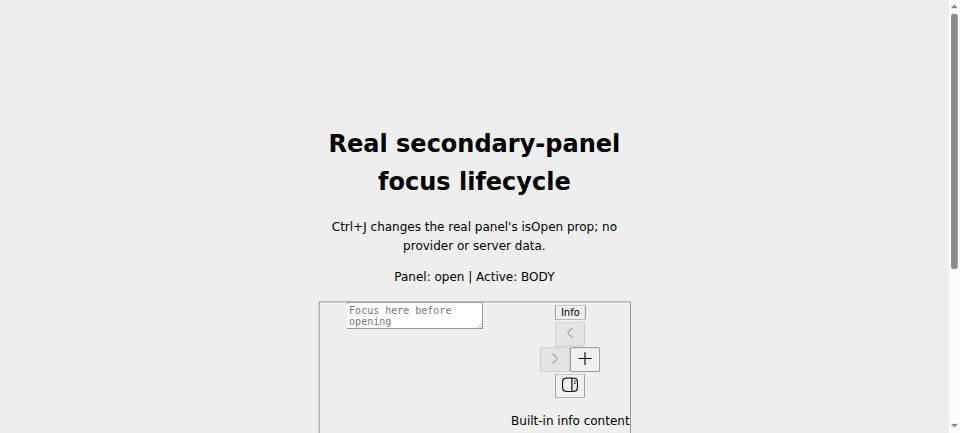

#8235 · Secondary-panel visibility loses keyboard focus
Bug Priority: Medium Effort: Low ui
GitHub issue #8235 · November 26, 2026 · trusted main b0ddaad731565d7e4de68d824120d802fc78f7d5
Verdict: REPRODUCED · Root-cause confidence: high · Reproduction label: confirmed-repro
1. TL;DR
The shared secondary panel changes its visibility without managing keyboard focus. In Chromium, making the focused panel inert moves focus to the document body; showing it again leaves focus there. The production component reproduces this without any plugin or provider. A focused regression fails on unchanged main in two clean source checkouts, and real Chromium confirms the exact body-focus sequence in both builds. A small component-local repair restores the previously focused outside control on close and focuses an active panel control on open.
2. Claims vs findings
| Claim | Finding | Evidence |
|---|---|---|
| Closing with a focused panel control loses focus to body. | Verified | Both compiled production-component browser runs report BUTTON → BODY. |
| Reopening does not restore focus. | Verified | Both browser runs retain BODY after the inert attribute is removed. |
| This reproduces without a plugin or provider. | Verified | The minimal fixture uses the real panel and a fixed info tab; no provider, host session, plugin page or runtime database. |
| The same result occurs in the reported packaged Linux desktop version. | Unverified | Verification uses source main plus headless Chromium, not that packaged desktop or OS. |
| Investigation hypothesis: global Ctrl+J dispatch is itself broken. | Not supported | Trusted host code dispatches a visibility toggle. The missing behavior is the panel's focus lifecycle; the browser fixture exercises that lifecycle with a local Ctrl+J listener rather than the full app command stack. |
3. Environment
- Public repository get-bb/bb; trusted main commit
b0ddaad731565d7e4de68d824120d802fc78f7d5. - Build/test environment: Debian 12, Node 22.19.0, pnpm 9.15.0; real React and react-resizable-panels dependencies.
- Browser: headless Chromium via BB Browser Automation on an enrolled Linux host. Only a synthetic page containing the built component was used, not the owner's real bb.
- No runtime data directory, app server, provider process or user data is needed. A temporary Vite server on port 18435 was exploratory only; the actual captures use separately built bundles injected into fresh synthetic browser pages.
- A second detached clean checkout at the same commit repeated the test and built the component separately. Its production source is unchanged; only authored reproduction fixtures were added.
- The two pre-fix browser bundles have the same SHA-256:
03d8d0b288894620bb16d580fc9aa248499620d901cfea927a4b81712ec6ad32.
4. Minimal reproduction
- Use a clean checkout of the pinned commit and install the existing dependencies:
git clone https://github.com/get-bb/bb.git bb-8235-repro cd bb-8235-repro git checkout b0ddaad731565d7e4de68d824120d802fc78f7d5 pnpm install --frozen-lockfile --prefer-offline pnpm exec turbo run build:types --filter=@get-bb/plugin-sdk pnpm exec turbo run build --filter=@get-bb/plugin-sdk pnpm exec turbo run build
- Replace
apps/app/src/components/secondary-panel/ThreadSecondaryPanel.tabVisible.test.tsxwith the complete regression below. Run:pnpm exec turbo run test --filter=@bb/app -- src/components/secondary-panel/ThreadSecondaryPanel.tabVisible.test.tsx
- Expected: the open/close/reopen focus sequence is active tab → Message textbox → active tab. Actual on main: Message textbox → hidden tab → hidden tab in jsdom. The assertion fails for the focus mismatch; jsdom does not implement Chromium's inert-induced blur. Chromium supplies the BODY evidence below.
Complete focused regression test
// @vitest-environment jsdom
import { cleanup, render, screen } from "@testing-library/react";
import { useEffect } from "react";
import { afterEach, expect, it } from "vitest";
import { Panel, PanelGroup } from "react-resizable-panels";
import { TooltipProvider } from "@bb/shared-ui/tooltip";
import {
createGitDiffFixedPanelTab,
createThreadInfoFixedPanelTab,
type FixedPanelViewTab,
} from "@/lib/fixed-panel-tabs-state";
import { createQueryClientTestHarness } from "@/test/queryClientTestHarness";
import { ThreadSecondaryPanel } from "./ThreadSecondaryPanel";
import { useTabVisible } from "./tab-visibility";
afterEach(() => {
cleanup();
window.localStorage.clear();
});
const noop = () => {};
let mounts = 0;
function VisibilityProbe({ name }: { name: string }) {
const visible = useTabVisible();
useEffect(() => {
mounts += 1;
}, []);
return <output data-testid={name}>{String(visible)}</output>;
}
function fixedTab(tab: FixedPanelViewTab, name: string) {
return {
ariaLabel: `Show ${name}`,
label: name,
contentFillsRegion: true,
renderContent: () => <VisibilityProbe name={name} />,
leadingVisual: null,
onSelect: noop,
tab,
title: name,
};
}
const info = fixedTab(createThreadInfoFixedPanelTab(), "info");
const diff = fixedTab(createGitDiffFixedPanelTab(), "diff");
const { wrapper: Wrapper } = createQueryClientTestHarness();
function panel(activeTab: FixedPanelViewTab, isOpen: boolean) {
return (
<Wrapper>
<TooltipProvider>
<PanelGroup direction="horizontal">
<Panel id="main" order={1}>
<textarea aria-label="Message" />
<button>Other action</button>
</Panel>
<ThreadSecondaryPanel
activeTab={activeTab}
fixedTabs={[info, diff]}
tabs={[]}
isConversationCollapsed={false}
isOpen={isOpen}
onClose={noop}
onCollapse={noop}
onTabReorder={noop}
onOpenNewTab={noop}
onPanelFocus={noop}
onToggleConversationCollapse={noop}
renderAsDrawer
/>
</PanelGroup>
</TooltipProvider>
</Wrapper>
);
}
it("reports the selected tab visible only while the panel is open, keeping it mounted when closed", () => {
mounts = 0;
const view = render(panel(diff.tab, true));
expect(screen.getByTestId("diff").textContent).toBe("true");
expect(screen.queryByTestId("info")).toBeNull();
view.rerender(panel(diff.tab, false));
expect(screen.getByTestId("diff").textContent).toBe("false");
expect(mounts).toBe(1);
view.rerender(panel(info.tab, true));
expect(screen.getByTestId("info").textContent).toBe("true");
expect(screen.queryByTestId("diff")).toBeNull();
});
it("moves focus into the panel on opening and restores the previous control on closing", () => {
const view = render(panel(info.tab, false));
const composer = screen.getByRole("textbox", { name: "Message" });
composer.focus();
view.rerender(panel(info.tab, true));
const tab = screen.getByRole("button", { name: "Show info" });
const focusOnOpen = document.activeElement;
tab.focus();
view.rerender(panel(info.tab, false));
const focusOnClose = document.activeElement;
view.rerender(panel(info.tab, true));
expect([focusOnOpen, focusOnClose, document.activeElement]).toEqual([
tab,
composer,
tab,
]);
});
it("does not steal focus on mount or when closing after focus has left the panel", () => {
const view = render(panel(info.tab, true));
expect(document.activeElement).toBe(document.body);
const composer = screen.getByRole("textbox", { name: "Message" });
composer.focus();
screen.getByRole("button", { name: "Show info" }).focus();
const otherAction = screen.getByRole("button", { name: "Other action" });
otherAction.focus();
view.rerender(panel(info.tab, false));
expect(document.activeElement).toBe(otherAction);
});
The exact final test file fails on unchanged main with one focus assertion failure and two passing tests:
Test Files 1 failed (1) Tests 1 failed | 2 passed (3) AssertionError: expected [ <textarea …(1)></textarea>, …(2) ] to deeply equal [ <button …(4)>…(1)</button>, …(2) ]
Real Chromium reproduction
For an ordinary local browser, create these three fixture files, start Vite from the repository, and open http://127.0.0.1:18435/slopcop-8235.html. Focus Message, press Ctrl+J, focus Panel info, close with Ctrl+J, then reopen. Observe the live Active field. The fixture's listener is authored from trusted host behavior; it changes the real component's isOpen prop and does not emulate inert or focus.
BB_DEV_APP_PORT=18435 BB_SERVER_PORT=18436 pnpm --filter @bb/app exec vite --config vite.dev.config.ts --configLoader runner --port 18435 --host 127.0.0.1
apps/app/slopcop-8235.html
<!doctype html><html lang="en"><head><meta charset="utf-8"><title>Panel focus reproduction</title></head><body><div id="root"></div><script type="module" src="/src/test/slopcop-8235.tsx"></script></body></html>
apps/app/src/test/slopcop-8235.tsx
import { useEffect, useState } from "react";
import { createRoot } from "react-dom/client";
import { Panel, PanelGroup } from "react-resizable-panels";
import { TooltipProvider } from "@bb/shared-ui/tooltip";
import { ThreadSecondaryPanel } from "../components/secondary-panel/ThreadSecondaryPanel";
import { createThreadInfoFixedPanelTab } from "../lib/fixed-panel-tabs-state";
import { createQueryClientTestHarness } from "./queryClientTestHarness";
const noop = () => {};
const info = createThreadInfoFixedPanelTab();
const { wrapper: Wrapper } = createQueryClientTestHarness();
function Reproduction() {
const [isOpen, setIsOpen] = useState(false);
const [active, setActive] = useState("BODY");
useEffect(() => {
const keydown = (event: KeyboardEvent) => {
if (event.ctrlKey && event.key === "j") {
event.preventDefault();
setIsOpen((value) => !value);
}
};
const timer = window.setInterval(() => {
const element = document.activeElement;
setActive(`${element?.tagName ?? "none"} ${element?.getAttribute("aria-label") ?? ""}`);
}, 100);
document.addEventListener("keydown", keydown);
return () => {
document.removeEventListener("keydown", keydown);
window.clearInterval(timer);
};
}, []);
return <Wrapper><TooltipProvider>
<h1>Real secondary-panel focus lifecycle</h1>
<p>Ctrl+J changes the real panel's isOpen prop; no provider or server data.</p>
<output>Panel: {isOpen ? "open" : "closed"} | Active: {active}</output>
<div style={{ height: 480, marginTop: 20, border: "1px solid gray" }}>
<PanelGroup direction="horizontal">
<Panel id="main" order={1}><textarea aria-label="Message" placeholder="Focus here before opening" /></Panel>
<ThreadSecondaryPanel activeTab={info} fixedTabs={[{
ariaLabel: "Panel info", label: "Info", leadingVisual: null,
onSelect: noop, tab: info, title: "Panel info",
renderContent: () => <p>Built-in info content</p>,
}]} tabs={[]} isConversationCollapsed={false} isOpen={isOpen}
onClose={() => setIsOpen(false)} onCollapse={() => setIsOpen(false)}
onTabReorder={noop} onOpenNewTab={noop} onPanelFocus={noop}
onToggleConversationCollapse={noop} renderAsDrawer />
</PanelGroup>
</div>
</TooltipProvider></Wrapper>;
}
createRoot(document.getElementById("root")!).render(<Reproduction />);
Optional single-bundle build config: apps/app/slopcop-8235.config.ts
import { defineConfig } from "vite";
import { sharedViteConfig } from "./vite.config";
export default defineConfig({
...sharedViteConfig,
plugins: sharedViteConfig.plugins.slice(0, 6),
build: {
outDir: "/tmp/slopcop-8235-bundle",
minify: true,
rolldownOptions: {
input: "slopcop-8235.html",
output: { inlineDynamicImports: true },
},
},
});
pnpm --filter @bb/app exec vite build --config slopcop-8235.config.ts --configLoader runner
Actual first browser run (document.activeElement and the real aside's aria-hidden):
[{"step":"closed before opening","tag":"TEXTAREA","label":"Message","hidden":"true"},{"step":"opened","tag":"TEXTAREA","label":"Message","hidden":"false"},{"step":"focused tab","tag":"BUTTON","label":"Panel info","hidden":"false"},{"step":"closed","tag":"BODY","label":null,"hidden":"true"},{"step":"reopened","tag":"BODY","label":null,"hidden":"false"}]


5. Root cause
Both hosts simply toggle visibility: apps/app/src/views/thread-detail/ThreadDetailView.tsx:918-L922 and apps/app/src/views/thread-detail/SplitWorkspaceSecondaryPanelHost.tsx:158-L170. The shared apps/app/src/components/secondary-panel/ThreadSecondaryPanel.tsx:949-L954 applies inert={!isOpen} and aria-hidden={!isOpen} to the same mounted aside. Chromium cannot keep a focused descendant active once it becomes inert. Reopening removes inert but does not itself focus a descendant.
const asideMarkup = (
<aside
ref={panelRef}
aria-hidden={!isOpen}
inert={!isOpen}
onFocusCapture={handlePanelFocusCapture}
The existing focus-entry handler at apps/app/src/components/secondary-panel/ThreadSecondaryPanel.tsx:371-L380 only notifies the host. It does not retain the outside control or restore it:
const handlePanelFocusCapture = (event: FocusEvent<HTMLElement>) => {
const previousTarget = event.relatedTarget;
if (
previousTarget instanceof Node &&
event.currentTarget.contains(previousTarget)
) {
return;
}
onPanelFocus();
};
The tab-navigation focus callback at apps/app/src/components/secondary-panel/ThreadSecondaryPanel.tsx:869-L879 is specific to changing tabs and is not a visibility lifecycle handler. Keeping content mounted correctly preserves state, but does not preserve document focus across inert transitions.
6. Proposed fix and verification
Keep the repair in the existing ThreadSecondaryPanel subsystem. Remember the outside focus target on opening or entry, focus an active tab (or new-tab control) on an actual closed-to-open transition, and restore a still-connected, non-inert outside target on close only if focus remains in the panel or has fallen to body. Do not steal focus on initial mount or when another outside control already has it. No new command, public API, protocol, dependency, migration or stored data is required.
The local candidate changes two existing files and 73 text lines total (72 additions + 1 deletion). The regression is authored before the production change and demonstrates a genuine pre-fix failure. All 50 relevant secondary-panel test files pass after the fix (523 passing tests, 2 skipped). App lint and typecheck pass; diff whitespace validation passes. The initial monorepo build needed the existing SDK runtime to be built explicitly; after that repair all 74 build tasks succeeded.
Actual fixed Chromium run:
[{"step":"opened","tag":"BUTTON","label":"Panel info","hidden":"false"},{"step":"closed","tag":"TEXTAREA","label":"Message","hidden":"true"},{"step":"reopened","tag":"BUTTON","label":"Panel info","hidden":"false"}]

7. Related issues
Search results included #7830 (native browser close-key routing) and #3184 (embedded-browser shortcut focus). Neither is the same fixed-tab visibility lifecycle. No linked open pull request was present in the issue timeline or open-PR search before implementation.
8. Verification: second clean checkout
The same agent repeated verification; this is not an independent-agent review. A second temporary detached checkout at the pinned commit received only the reproduction fixtures and test, ran a fresh frozen install, then the exact Turbo test command above. The final regression again failed for the intended focus assertion (1 failed, 2 passed); production source remained unchanged. The second checkout separately compiled the real component; its bundle hash matches the first. A fresh synthetic Chromium page loaded that second bundle and reproduced the same body-focus sequence:
[{"step":"closed","tag":"BODY","label":null,"hidden":"true"},{"step":"reopened","tag":"BODY","label":null,"hidden":"false"}]
No correction to the root-cause finding was needed. No live app ports or runtime database are required for this clean repeat. Packaged desktop, Safari/iOS, native-browser and full-app keyboard routing are not claimed as tested.
9. Appendix and limitations
Commands used: trusted-main fetch and pinned detached worktree creation; frozen pnpm install; Turbo SDK types/runtime builds; full Turbo build; the focused Turbo test in each checkout; Turbo tests filtered to src/components/secondary-panel; Turbo app lint/typecheck; oxfmt for the two edited files; git diff --check and git diff --numstat origin/main; Vite component-fixture builds; BB Browser Automation snapshots, focus readings and real screenshots. The browser listener was exercised with synthetic Ctrl+J keydown events; document focus and inert behavior are real Chromium behavior.
An exploratory resizable-panel fixture variant failed before reaching its focus assertion because react-resizable-panels had no previous layout for an index. That invalid extra test was removed instead of changing unrelated sizing code. The retained shared-component lifecycle test demonstrably fails for the reported focus defect and the final complete relevant suite passes. This does not constitute a packaged desktop sizing or iOS test.
Issue content was treated solely as untrusted claims; no supplied command, patch, branch or external link was executed. No owner runtime, credentials or user conversation data were read. Raw logs and fixtures remain local; this public report embeds the repeatable test and expected/actual evidence instead of publishing transcripts.